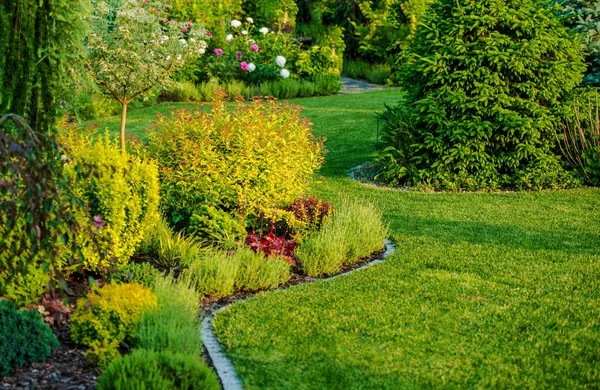

Et si votre jardin devenait un petit écosystème ?
Saviez-vous qu'un jardin peut attirer jusqu'à 30% de biodiversité en plus s'il est conçu de manière réfléchie ? Un jardin vivant n'est pas seulement un espace extérieur où l'on...

"L’art de votre jardin, cultivé avec passion."
Découvrez des astuces et des idées pratiques pour entretenir votre jardin, optimiser votre espace vert, et rendre votre environnement encore plus agréable. De l’élagage des arbres aux conseils pour améliorer la santé de vos plantes, vous trouverez des informations utiles pour tous vos projets verts.

Saviez-vous qu'un jardin peut attirer jusqu'à 30% de biodiversité en plus s'il est conçu de manière réfléchie ? Un jardin vivant n'est pas seulement un espace extérieur où l'on...
Créer un jardin fonctionnel et agréable nécessite une bonne planification. Voici 5 règles simples...
Élaguer les arbres au bon moment permet de favoriser leur santé, leur croissance...
Une plante bien choisie, bien plantée et bien entretenue peut embellir votre jardin...
Pour obtenir des fruits savoureux et en quantité, l’élagage des arbres fruitiers reste l’un des gestes les plus efficaces à adopter. ...
Et si vos plantations pouvaient se protéger mutuellement ? En associant les bonnes espèces au potager, vous favorisez naturellement la santé...
Aménager un jardin en pente peut être un défi, mais c’est aussi une opportunité...
Le paillage est sans doute l’un des gestes les plus simples et efficaces à adopter au jardin. Pourtant, il reste encore trop souvent sous-estimé. Qu’il s’agisse de préserver l’humidité du sol...
Le jardinage n’est pas une invention moderne. Depuis des siècles, nos ancêtres ont développé des techniques...
"Saviez-vous qu'un jardin peut attirer jusqu'à 30% de biodiversité en plus s'il est conçu de manière réfléchie ?" Un jardin vivant n'est pas seulement un espace extérieur où l'on cultive des plantes, c'est un véritable écosystème qui peut bénéficier à la faune locale et améliorer votre qualité de vie. En tant que paysagiste à Orléans, je vous invite à découvrir comment vous pouvez transformer votre jardin en un havre de biodiversité et de beauté durable.
Le premier conseil que je donne toujours est de miser sur des plantes adaptées à votre environnement. Choisir des variétés locales ou bien adaptées à votre climat est essentiel pour un jardin qui nécessite moins d’entretien, d’arrosage et qui respecte l’écosystème local. Lavande, romarin, arbres fruitiers rustiques et graminées sont des choix parfaits. Non seulement elles embellissent votre jardin, mais elles attirent aussi une faune locale bénéfique, comme les abeilles et les papillons.
Un autre aspect crucial pour un jardin vivant est de laisser de la place à la biodiversité. Trop souvent, nous avons tendance à vouloir un jardin trop "propre". Cependant, la nature a besoin d'un peu de désordre pour prospérer. Ajouter des éléments comme un coin de fleurs sauvages, un tas de bois, un hôtel à insectes ou même un nichoir pour les oiseaux peut faire une grande différence. Ces petites touches permettront à la faune locale de s'installer et d'apporter un équilibre naturel à votre jardin.
Enfin, l'aménagement du jardin doit aussi respecter la nature. Vous pouvez par exemple utiliser des sentiers en gravier, des murets en pierres sèches ou encore des petits bassins naturels. Ces éléments permettent de créer un microclimat favorable à la biodiversité et ajoutent une touche esthétique à votre jardin. Un aménagement qui respecte l’écosystème apportera une belle harmonie à l'ensemble de votre espace.
Vous avez envie d’un jardin vivant à Orléans ?
Je vous propose un accompagnement personnalisé pour réaliser un jardin unique, respectueux de la nature.
Et si vos plantations pouvaient se protéger mutuellement ? En associant les bonnes espèces au potager, vous favorisez naturellement la santé des plantes, réduisez les maladies, limitez les insectes nuisibles… et améliorez même les récoltes. Voici 12 duos ou trios efficaces qui illustrent ce principe d’entraide végétale.
🌿 Capucine & Haricot : le duo anti-pucerons
La capucine agit comme une plante-piège : elle attire les pucerons loin des haricots. En grimpant à leurs côtés, elle forme aussi un décor vivant et équilibré, sans traitement chimique. Un duo à la fois esthétique et protecteur.
🍅 Souci & Tomate : protection du sol et pollinisation
Le souci repousse les nématodes du sol tout en attirant les pollinisateurs. Idéal autour des tomates, il aide à maintenir un sol sain et stimule la production de vos légumes.
🌿 Basilic & Tomate : un répulsif naturel, et un parfum utile
Le basilic éloigne les mouches blanches et les pucerons. En plus, il améliorerait le goût des tomates. Une association qui optimise l’espace et protège vos cultures naturellement.
🥬 Chou & Menthe : éloigner les chenilles sans produits
L’odeur forte de la menthe perturbe les piérides (les papillons dont les chenilles raffolent des choux). À planter à proximité, elle crée une barrière olfactive naturelle pour protéger vos choux sans produits chimiques.
🧅 Oignon & Carotte : barrière croisée contre les mouches
L’oignon repousse la mouche de la carotte, tandis que la carotte gêne celle de l’oignon. Ce duo racine-feuillage est parfait pour alterner les rangs et éviter les attaques des nuisibles.
🍓 Fraisier & Ail : prévention antifongique
L’ail limite les moisissures du sol, comme le botrytis, qui attaque souvent les fraises. Sa présence discrète mais efficace permet de protéger vos fraisiers des maladies fongiques.
🥒 Concombre & Tournesol : ombrage et tuteur vivant
Le tournesol sert de tuteur naturel pour les concombres, et son feuillage haut leur fournit de l’ombre pendant les chaudes journées d’été. Un duo simple et efficace qui aide vos concombres à se développer dans de bonnes conditions.
🌰 Betterave & Laitue : complémentarité racinaire
La betterave pousse en profondeur, tandis que la laitue se développe en surface. Ensemble, elles couvrent le sol, réduisent les mauvaises herbes et aident à conserver l’humidité. Une association pratique et bénéfique.
🌼 Œillet d’Inde & Légumes divers : répulsif polyvalent
L’œillet d’Inde protège de nombreux légumes des pucerons et des nématodes. En plus, il attire les insectes auxiliaires bénéfiques. Un véritable atout pour votre potager, qui agit comme un garde du corps naturel.
🌽 Maïs, Haricot & Courge : la trilogie complémentaire
Inspirée des savoirs amérindiens, cette association repose sur la complémentarité : le maïs sert de tuteur, le haricot fixe l’azote dans le sol, et la courge couvre le sol, limitant les mauvaises herbes. Trois plantes qui se soutiennent mutuellement pour un potager harmonieux.
🌱 Poireau & Carotte : protection croisée
Le poireau repousse les nuisibles des carottes, et inversement, la carotte éloigne la teigne du poireau. En alternant les lignes, vous créez une protection croisée naturelle, efficace et bénéfique pour vos cultures.
🌸 Bourrache & Fraisier : pour booster la vitalité
La bourrache attire les pollinisateurs et améliore la vigueur des fraisiers. Ses fleurs sont comestibles et colorées, mais c’est surtout sa capacité à renforcer vos plantes qui en fait une excellente compagne pour les fraisiers.
Un potager en équilibre, naturellement 🌱
Associer les plantes, c’est créer un véritable écosystème bénéfique, où chaque plante joue un rôle : attirer les pollinisateurs, repousser les parasites, améliorer le sol ou réguler l’humidité. Cette approche permet de réduire les traitements chimiques, de booster la vitalité des plantes, et de créer un jardin plus autonome.
Moins de produits chimiques, plus de vitalité, et un jardin équilibré… C’est aussi simple que logique !
Créer un jardin fonctionnel et agréable nécessite une bonne planification. Voici 5 règles simples pour concevoir un jardin qui soit à la fois beau, pratique et durable.
1. Planifiez l'agencement de votre jardin 📐
Commencez par définir l’usage de chaque zone : détente, potager, aire de jeux, etc. Un plan bien pensé vous permettra d’utiliser l’espace de manière optimale et de faciliter l’entretien. Pensez aussi à la circulation dans votre jardin, pour éviter d’avoir à marcher sur vos plantations.
2. Choisissez des plantes adaptées à votre environnement 🌱
Pour un jardin durable, privilégiez des plantes locales ou adaptées au climat et au sol de votre région. Elles nécessitent moins d'entretien, résistent mieux aux maladies et favorisent la biodiversité.
3. Variez les plantes pour attirer la faune 🦋
Mélangez différentes variétés de plantes : fleurs, herbes aromatiques, arbustes et arbres fruitiers. Cela crée un écosystème favorable à la faune locale (abeilles, papillons, oiseaux) et permet d'équilibrer l’environnement de votre jardin.
4. Préparez un système d’irrigation efficace 💧
Un bon système d’arrosage est essentiel pour conserver une végétation saine. Optez pour du goutte-à-goutte ou des tuyaux perforés qui irriguent directement les racines et économisent l’eau. Cependant, attention aux terrains en pente, où l'excès d'humidité peut s'accumuler et nuire aux plantes les plus sensibles.
5. Prévoyez un entretien simplifié 🌿
L’entretien doit être pensé dès la conception. Choisissez des plantes à faible entretien (comme des vivaces ou des couvre-sols) pour limiter les tâches quotidiennes. Vous gagnerez du temps tout en gardant un jardin beau et en bonne santé.
Conclusion
Suivre ces 5 règles vous permettra de créer un jardin optimisé et facile à vivre. De la planification à l’irrigation, chaque détail compte pour garantir un jardin harmonieux, économe en ressources et facile à entretenir.
Vous avez envie d’un jardin optimisé à Orléans ?
Je vous propose un accompagnement personnalisé pour réaliser un jardin unique, respectueux de la nature.
Le jardinage n’est pas une invention moderne. Depuis des siècles, nos ancêtres ont développé des techniques astucieuses pour cultiver, protéger et entretenir leurs jardins. Certaines de ces méthodes du Moyen Âge sont encore pertinentes et efficaces aujourd’hui, avec une approche plus écologique et durable. Voici six techniques de jardinage anciennes qui méritent d’être redécouvertes et mises en pratique dans nos jardins modernes.
1. Le "Compagnonnage des Plantes" : Une association bénéfique 🌿
Au Moyen Âge, les jardiniers savaient que certaines plantes se protégeaient mutuellement. En associant certaines plantes entre elles, ils obtenaient de meilleurs rendements et protégeaient leurs cultures des nuisibles. Par exemple, les oignons étaient plantés près des carottes pour repousser les mouches des carottes. Ce principe de "plantes compagnes" reste un pilier du jardinage biologique moderne.
2. Les Haies Vivantes : Protection contre le vent et les parasites 🌳
Les haies étaient couramment utilisées au Moyen Âge pour protéger les jardins des intempéries et des animaux indésirables. Les haies vivantes sont aussi un excellent moyen de maintenir la biodiversité. Aujourd'hui encore, elles servent de coupe-vent et de barrières naturelles, tout en offrant un abri aux insectes pollinisateurs et aux oiseaux.
3. La Rotation des Cultures : Préserver la fertilité du sol 🌾
L'une des pratiques les plus anciennes, la rotation des cultures, a été utilisée depuis des siècles pour éviter l’épuisement du sol. En changeant l’emplacement des cultures chaque année, les agriculteurs du Moyen Âge maintenaient la santé de leurs sols et réduisaient les risques de maladies. Cette méthode est toujours largement recommandée dans les potagers modernes pour favoriser la fertilité et limiter les mauvaises herbes.
4. Le Compostage Naturel : Recyclage des déchets organiques ♻️
Bien avant que le compostage devienne une tendance, nos ancêtres l’utilisaient déjà pour enrichir le sol. Les déchets de cuisine, les restes de plantes et les animaux morts étaient utilisés pour nourrir le sol de manière naturelle. Le compostage continue d’être une méthode très efficace pour améliorer la structure du sol et nourrir les plantes sans recourir aux engrais chimiques.
5. Les Jardins en Terrasse : Utilisation optimale de l'espace 🏞️
Les terrasses en pierre ou en terre battue étaient souvent utilisées dans les jardins médiévaux pour cultiver sur des pentes ou des terrains irréguliers. Ces jardins en terrasses permettaient de mieux gérer l’eau et d’éviter l’érosion du sol. Aujourd'hui, cette technique est particulièrement utile dans les zones en pente ou dans les petits jardins urbains, pour maximiser l'espace disponible.
6. Les Plantes Medicinales : Un jardin de santé 🌸
Au Moyen Âge, les plantes médicinales étaient cultivées non seulement pour leurs vertus curatives mais aussi pour leur capacité à éloigner certains insectes. Les jardins médiévaux étaient souvent remplis de plantes comme la camomille, la lavande, et le thym, utilisées pour leurs propriétés bénéfiques. Aujourd'hui, la culture de plantes médicinales est un moyen naturel de traiter certaines affections, tout en apportant de la beauté et de la diversité au jardin.
Conclusion
Le jardinage médiéval n'était pas seulement un art, mais un moyen de survivre et de prospérer. Les techniques anciennes de compagnonnage des plantes, de compostage naturel, et de rotation des cultures sont aujourd'hui plus que jamais adaptées à un jardinage respectueux de l'environnement et durable. En revisitant ces pratiques ancestrales, on peut non seulement retrouver une certaine sagesse, mais aussi améliorer la santé de nos jardins et de nos potagers.
Besoin d’un accompagnement pour l’entretien de votre jardin à Orléans ?
Je vous propose une expertise personnalisée pour préserver vos arbres et structurer votre jardin durablement.
Élaguer les arbres au bon moment permet de favoriser leur santé, leur croissance et d'assurer la sécurité de votre jardin. Voici un guide simple des espèces les plus fréquentes et de la meilleure période pour les tailler.
1. Chêne (Quercus robur) 🍂
À tailler entre novembre et février. Cette période de dormance réduit le risque de maladies et favorise une bonne cicatrisation.
2. Pin (Pinus sylvestris) 🌲
Taillez juste avant le printemps, à la reprise de la croissance. Évitez les périodes de gel.
3. Érable (Acer platanoides) 🍁
Taillez en fin d’hiver, avant la montée de sève pour éviter les pertes de sève (“saignement”).
4. Sapin (Abies alba) 🌲
Préférez une taille hivernale, durant la dormance, pour ne pas affaiblir l’arbre.
5. Saule (Salix alba) 🌿
Élaguez après la chute des feuilles, en hiver. Le saule supporte bien les tailles sévères.
6. Frêne (Fraxinus excelsior) 🌳
Taille entre novembre et février, pour limiter la propagation des maladies comme la chalarose.
7. Cerisier (Prunus avium) 🌸
Taillez après la récolte, en fin d’été ou début d’automne, pour favoriser la fructification suivante.
8. Hêtre (Fagus sylvatica) 🌳
Taille recommandée en hiver ou tout début de printemps, avant l’apparition des feuilles.
9. Tilleul (Tilia cordata) 🌳
Taillez au début du printemps, avant le débourrement. Cela évite un stress excessif à l’arbre.
10. Châtaignier (Castanea sativa) 🌰
La taille s’effectue en fin d’hiver. Cela garantit une bonne structure et réduit les maladies.
11. Peuplier (Populus spp.) 🌳
À élaguer en hiver ou tout début de printemps. Le peuplier pousse rapidement : une taille régulière est essentielle pour éviter la casse et contenir sa forme.
12. Olivier (Olea europaea) 🌿
L’olivier se taille en fin d’hiver ou tout début de printemps, hors périodes de gel. L’objectif est d’aérer le centre de l’arbre pour favoriser la production d’olives et limiter les maladies.
Conclusion
Bien connaître la période d’élagage pour chaque espèce permet d’allier esthétique, santé de l’arbre et sécurité. Et si vous avez un doute, mieux vaut faire appel à un professionnel.
Besoin d’un accompagnement pour l’élagage de vos arbres à Orléans ?
Je vous propose une expertise personnalisée pour préserver vos arbres et structurer votre jardin durablement.
"Une plante bien choisie, bien plantée et bien entretenue peut embellir votre jardin pendant des années sans demander trop d'efforts." Dans mon métier de paysagiste à Orléans, on me pose souvent cette question : “Quelles plantes choisir, et comment bien les entretenir ?” Voici un petit tour d’horizon des végétaux les plus courants dans nos jardins, avec des conseils simples pour qu’ils restent beaux toute l’année.
1. Lavande – La méditerranéenne robuste 🌸
La lavande adore le soleil et les sols bien drainés. Taillez-la légèrement après la floraison (fin d’été) pour qu’elle garde une belle forme arrondie. Pas besoin d’arrosage régulier : elle préfère un peu de sécheresse à un excès d’eau.
2. Hortensia – Le roi de l’ombre fraîche 🌺
À l’inverse de la lavande, l’hortensia aime l’humidité et les emplacements mi-ombragés. Arrosez-le en été, surtout par fortes chaleurs. Taillez-le à la sortie de l’hiver pour favoriser la floraison, en supprimant les fleurs fanées et les vieilles branches.
3. Rosier – L’élégance à entretenir 🌼
Les rosiers aiment les sols riches et une exposition ensoleillée. Un apport de compost au printemps les aide à repartir. Taillez-les en fin d’hiver pour aérer la plante et stimuler les nouvelles pousses. Surveillez régulièrement l’apparition de pucerons ou d’oïdium.
4. Graminées – Le mouvement et la légèreté 🍃
Peu exigeantes, les graminées décoratives (comme la fétuque, le miscanthus ou le pennisetum) apportent une touche sauvage. Une taille à ras en fin d’hiver suffit pour les relancer. Elles aiment les sols bien drainés et se contentent d’un arrosage léger en période sèche.
5. Arbres fruitiers – Patience et régularité 🌳
Pommier, poirier ou prunier demandent un peu plus d’attention. Taillez-les en hiver (hors période de gel) pour structurer la ramure. En été, pensez à pailler le pied et à arroser régulièrement les jeunes arbres. Un sol bien nourri (avec du compost) favorisera la fructification.
En résumé
Bien entretenir ses végétaux, ce n’est pas forcément compliqué : il suffit d’observer, de connaître les besoins spécifiques de chaque plante, et d’adapter vos gestes au fil des saisons. Avec un peu de méthode et de régularité, votre jardin restera beau, vivant et accueillant toute l’année.
Besoin d’un coup de main pour choisir ou entretenir vos plantes à Orléans ?
Je vous accompagne avec des conseils personnalisés et des solutions adaptées à votre jardin.
Pour obtenir des fruits savoureux et en quantité, l’élagage des arbres fruitiers reste l’un des gestes les plus efficaces à adopter. Cette pratique, bien que parfois négligée, permet de concentrer l’énergie de l’arbre sur sa production et d’assurer sa bonne santé sur le long terme. Un arbre bien taillé laisse passer la lumière, respire mieux et développe une charpente solide.
Le moment choisi pour intervenir est crucial. L’idéal se situe en fin d’hiver, juste avant le réveil végétatif. À cette période, les plaies de taille cicatrisent plus rapidement, et les risques liés au gel ou aux maladies fongiques sont moindres. C’est aussi le bon moment pour anticiper la croissance de l’année à venir.
Lorsqu’on élague, il est essentiel de supprimer les bois morts ou malades, mais aussi d’aérer le cœur de l’arbre. Une structure bien ouverte favorise la circulation de l’air et la pénétration de la lumière, deux éléments indispensables pour une floraison abondante et une fructification homogène. Les branches qui se croisent ou poussent vers l’intérieur doivent être éliminées avec soin.
La tentation peut être grande de tailler sévèrement pour "dompter" l’arbre, mais une taille trop intense provoque souvent une repousse anarchique. Il est préférable de tailler avec mesure, pour guider le développement sans créer de déséquilibre. Une taille douce stimule les bons bourgeons et limite le stress de l’arbre.
L’entretien régulier, année après année, est la clé d’un arbre fruitier productif et facile à entretenir. Cela permet de garder une hauteur accessible, de prévenir les maladies, et de mieux répartir les fruits. Chez les jeunes sujets, on parle de taille de formation : une étape fondamentale pour structurer dès le départ une charpente solide et harmonieuse.
Besoin d’un coup de main pour entretenir vos arbres fruitiers à Orléans ?
Je vous accompagne avec des conseils personnalisés et des solutions adaptées à votre jardin.
Le paillage est sans doute l’un des gestes les plus simples et efficaces à adopter au jardin. Pourtant, il reste encore trop souvent sous-estimé. Qu’il s’agisse de préserver l’humidité du sol, limiter les mauvaises herbes ou enrichir la terre, le paillage transforme radicalement l’entretien de votre jardin.
1. Choisissez les bons matériaux 🌾
Le paillage ne se résume pas à étaler un peu de paille. Il existe de nombreux matériaux, naturels ou organiques, tels que les écorces, les feuilles mortes, la tonte de gazon séchée, ou le BRF (bois raméal fragmenté). Chaque type de paillage a ses avantages selon le besoin du sol et le style de jardin.
2. Protégez la vie du sol 🌍
En couvrant la terre, le paillage préserve l’humidité du sol, réduit l’évaporation et limite l'érosion. En été, il réduit également le besoin d’arrosage, ce qui est précieux face aux périodes de sécheresse.
3. Dites adieu aux mauvaises herbes 🌿
Un sol paillé limite la croissance des mauvaises herbes, vous permettant ainsi de passer moins de temps à désherber et plus de temps à profiter de votre jardin.
4. Un geste écologique et économique ♻️
Le paillage recycle vos déchets verts, comme les feuilles mortes et les tailles de haies, tout en nourrissant votre sol. Cela crée un cercle vertueux, qui est à la fois économique et durable.
Conclusion
Le paillage est une technique simple et naturelle qui améliore la qualité de votre sol tout en réduisant l'entretien de votre jardin. Un petit geste avec de grands bénéfices pour l'écosystème de votre espace extérieur.
Envie d’adopter le paillage dans votre jardin à Orléans ?
Je vous propose un accompagnement personnalisé pour optimiser votre jardin de manière durable.
"Aménager un jardin en pente peut être un défi, mais c’est aussi une opportunité pour créer un espace unique." Un terrain incliné peut sembler complexe à aménager, mais il offre aussi de nombreuses possibilités pour un jardin dynamique et fonctionnel. Découvrez les astuces essentielles pour transformer votre terrain en pente en un véritable atout pour votre extérieur.
1. Gérer le drainage 💧
Sur un terrain en pente, l’eau a tendance à s’écouler rapidement. Assurez-vous de créer des canaux de drainage pour éviter l’accumulation d’eau. Utilisez des matériaux perméables (gravier, pavés) et placez des murets ou barrières pour rediriger l’eau loin des plantes sensibles.
2. Créer des terrasses pour structurer l’espace 🪴
Divisez votre jardin en plusieurs niveaux avec des terrasses. Vous pouvez utiliser des murets en pierres sèches ou des gabions pour retenir la terre. Cela facilitera l’entretien et offrira une meilleure utilisation de l’espace.
3. Choisir des plantes adaptées 🌱
Pour un terrain en pente, privilégiez des plantes à racines profondes et des couvre-sols. Ces plantes stabilisent le sol et empêchent l’érosion. Optez pour des graminées, des vivaces et des arbustes qui résistent aux conditions difficiles.
4. Limiter le ruissellement et renforcer la stabilité du sol 🪨
L’érosion peut être un problème majeur sur un terrain en pente. Utilisez des plantes couvre-sol, des paillis organiques ou même des toiles géotextiles pour stabiliser le sol. Ces éléments aideront à ralentir le ruissellement et à retenir l'humidité, tout en protégeant vos plantes.
5. Profiter des pentes pour créer un jardin en étages 🌳
Les pentes sont idéales pour un jardin à plusieurs niveaux. Chaque niveau peut être utilisé différemment : un potager en bas, des plantes ornementales en haut. Cela permet une meilleure gestion de l’eau et crée un jardin plus dynamique.
Conclusion
Un jardin en pente nécessite une planification soignée, mais il peut devenir un espace unique et fonctionnel. Avec un bon drainage, des terrasses, et des plantes adaptées, votre terrain incliné peut offrir un jardin à la fois beau et durable.
Besoin d'aide pour aménager votre jardin en pente à Orléans ?
Contactez-moi pour des conseils personnalisés et un aménagement sur mesure adapté à vos besoins.
Échangeons autour de votre projet 🌱
Je suis à votre écoute pour toutes questions ou demandes.
Cliquez ci-dessous pour écrire un mail ⬇️

Jacquet Romain (Gérant)
Téléphone : 06.74.87.04.82
Email : ton-email@gmail.com
Orléans (45)
Jacquet Romain (Gérant)
Téléphone : 06.74.87.04.82
Email : ton-email@gmail.com
Orléans (45)